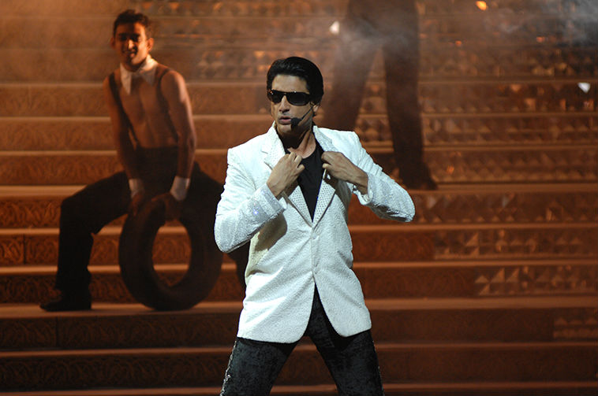
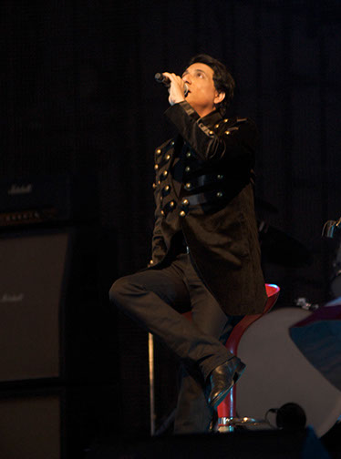
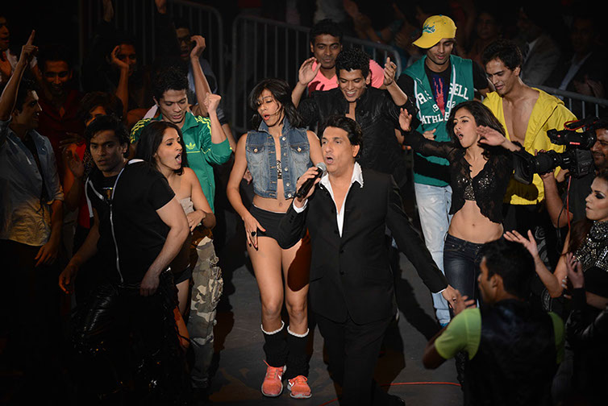
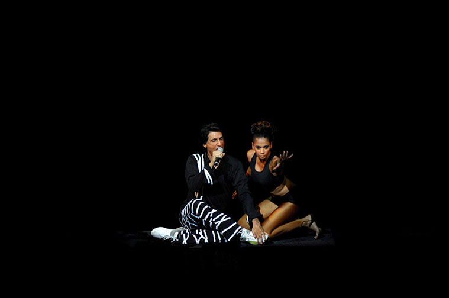

Dancing Toes Foundation is our small way of giving back to the community what God has given us.’ Shiamak Davar
Shiamak Davar founded the Dancing Toes Foundation in 2004 to make dance accessible to the lesser privileged and those with special needs.
Dancing Toes Foundation makes dance available across age, gender, caste, class and ability, without prejudice. It provides a platform to address social causes and concerns, and makes dance a viable and respected career option.
Through its various programs, Dancing Toes has made dance acceptable and made people understand the power of dance to educate, entertain, empower, enlighten and enable.
Dancing Toes has touched the lives of over 10,000 individuals in over 200 NGOs/Institutes across 12 cities in India.
Dancing Toes that was first started in Goregoan,Mumbai in the year 1975.Started to spread to other near by places and other states like Delhi,Chennai and so on. In the year 1985,Dancing Toes stepped out of India.They started their dance acadamy in dubai which was their first out of India initiative.But now Dancing Toes have spread to countries like USA,England and so on. Not only dance academy but also shows,events and fitness programs are held here.